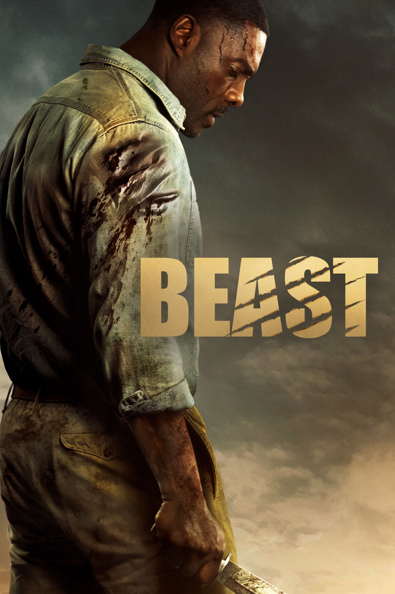

Мировая премьера: 19 августа 2022
Слоган: Борьба за семью.
Сюжет: После смерти жены доктор Нэйт Сэмюэлс возвращается в Южную Африку, где они познакомились. Вместе с двумя дочерьми-подростками он направляется в заповедник, которым управляет давний друг семьи Мартин Бэттлз. Однако семейная поездка оборачивается смертельно опасным приключением, в котором Нэйту придется вступить в противостояние со свирепым львом. Выжив после нападения кровожадных браконьеров, огромный лев теперь видит во всех людях врагов и стремится доказать, что в саванне может быть только один главный хищник.
Режиссёр: Бальтасар Кормакур
В ролях:
| Идрис Эльба | Доктор Нэйт Сэмюэлс |
| Ияна Хэлли | Мередит "Мейр" Сэмюэлс |
| Леа Джеффрис | Нора Сэмюэлс |
| Шарлто Копли | Мартин Бэттлз |
Бюджет: $ 36 млн.
Кассовые сборы в США: $ 32 млн.
Кассовые сборы в мире: $ 59 млн.
Продолжительность: 1 ч. 27 мин.
Рейтинг: 5.6